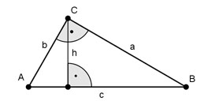

Pythagoras Aufgabe 37 Die Katheten eines rechtwinkligen Dreiecks stehen im Verhältnis a : b = 3 : 4. Wie lang sind die Katheten in cm und die Fläche A in cm2, wenn die Hypotenuse 8 cm lang ist?

c = 8 cm a 3 --- = --- |*b b 4 3 a = --- b = 0,75 * b 4 c2 = a2 + b2 3 82 = (---b)2 + b2 4 9 64 = ---- b2 + b2 16 25 64 = ---- b2 |*16 16 1024 = 25b2 :25 40,96 = b2 |√ b = 6,4 cm a = 0,75 * b = 0,75 * 6,4 cm = 4,8 cm a * b 6,4 cm * 4,8 cm A = ------- = ------------------- = 15,4 cm2 2 2